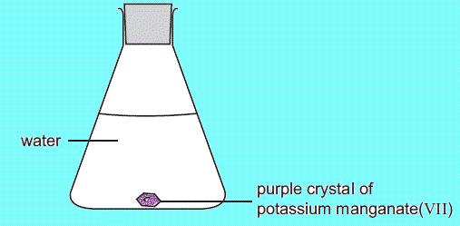
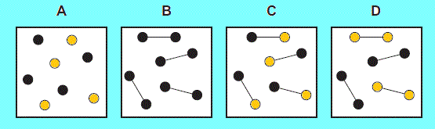

For each question there are four possible answers A,B,C and D. Choose the
one you consider correct , click the radio button next to it and then
click the button "Check Answer ".
1. In which of the following are the particles arranged in a regular
pattern?
2. At room temperature, in which substance are the particles furthest apart?
3. When there is no wind, the scent of flowers can be detected more easily
on a warm evening than on a cold evening.
This is because the molecules of the scent
than in colder conditions.
Which words correctly complete and
?
1
2
A
condense
nearer to the flowers
B
condense
further from the flowers
C
diffuse
nearer to the flowers
D
diffuse
further from the flowers
4. A yellow precipitate is formed in the experiment shown.
How is the precipitate formed?
5. The diagram shows a cup of tea.
Which row describes the water particles in the air above the cup compared
with the water particles in the cup?
moving faster
closer together
A
yes
yes
B
yes
no
C
no
yes
D
no
no
6. Which diagram shows the process of diffusion?
7. A shirt is stained with red ink from a pen. The shirt is left to soak in
a bowl of water.
Which process causes the red colour to spread?
8. A sealed conical flask contains a liquid and its vapour, as shown.
What happens when a molecule in the vapour enters the liquid?
the molecule stops moving
the molecule becomes smaller
A
yes
yes
B
yes
no
C
no
yes
D
no
no
9. When steam at 100oC condenses to water at 25oC,
what happens to the water molecules?
10. Blue copper(II) sulphate crystals are soluble in water.
What has happened after one week?
11.In which change of state do the particles become more widely separated?
12. Oxides of nitrogen from car exhausts can spread through the
atmosphere.This occurs because gas molecules move from a region of 1
concentration to a region of 2 concentration by a process called 3 .
Which words correctly complete the gaps?
1
2
3
A
high
low
diffusion
B
high
low
evaporation
C
low
high
diffusion
D
low
high
evaporation
13. In which changes do the particles move further apart?
14. The diagrams show the arrangement of particles in three different
physical states of substance X.
Which statement about the physical states of substance X is correct?
15. An attempt was made to compress a gas and a solid using the apparatus
shown.
Which substance would be compressed and what is the reason for this?
substance
reason
A
gas
the gas particles are close together
B
gas
the gas particles are far apart
C
solid
the solid particles are close together
D
solid
the solid particles are far apart
16. Methylamine, CH3NH2 (Mr = 31), and hydrogen
chloride, HCl (Mr = 36.5) are both gases which are soluble in water. The
gases react together to form a white solid, methylammonium chloride.
In an experiment to demonstrate rates of diffusion the following apparatus
is set up.
Where will the white solid form?
17. The experiment is set up as shown and left until there is no further
change.
In an experiment to demonstrate rates of diffusion the following apparatus
is set up.
What is observed?

18. A beaker of nitrogen is inverted over a porous pot containing carbon
monoxide as shown.
The water level does not change.
What is the reason for this?
19. The table gives data about four substances.
Which substance has particles in a disorderly arrangement at room
temperature?
melting point/oC
boiling point/oC
A
-114
-80
B
120
445
C
750
1407
D
1610
2230
20. Nitrogen dioxide is a dark brown gas and is more dense than air.
A gas jar containing nitrogen dioxide is sealed with a glass plate and is
then inverted on top of a gas jar containing air.The glass plate is
removed.
Which one of the following correctly describes the colours inside the gas
jars after a long period of time?
upper gas jar
lower gas jar
A
brown
brown
B
dark brown
light brown
C
colourless
dark brown
D
light brown
dark brown
21. Two elements, represented by
form a compound.
Which diagram shows molecules of the compound?

22. In the diagrams, circles of different sizes represent atoms of different
elements.
Which diagram represents hydrogen chloride gas?
23. The apparatus shown in the diagram was set up.
Over a period of time how will the water level at X change?
24. In which conversion do H2O molecules lose speed?
Over a period of time how will the water level at X change?
25. The coverplate is removed from the gas jars shown in the diagram. After
several days, the colour of the gas is the same in both jars.
Which statement explains this change?
26. Solid ammonium chloride decomposes on heating according to the following
equation:
NH4Cl(s) → NH3(g) + HCl(g)
Which change occurs to the damp red litmus paper in the experiment above?
27. The three rectangles show the arrangements of the particles in each of
the three states of matter.
X, Y and Z represent the processes needed to change from one state to
another.
What are the processes X, Y and Z?
28. The melting points and boiling points of four elements are shown.
X, Y and Z represent the processes needed to change from one state to
another.
In which elements do the particles vibrate about fixed positions at 0
oC?
29. Which statement about solids, liquids or gases is correct?
30. A gas is placed in a sealed container. The gas has a pressure of one
atmosphere and a temperature of 50 oC.
It is heated to 100 oC.
Which row describes the cause of the pressure of the gas and the effect of
increasing the temperature of the gas?
31. Part of a cooling curve for water is shown.
What is occurring between points X and Y?
32. Which row describes the spacing and arrangement of particles in a solid,
a liquid and a gas?
33. Which statement describes the particles in a liquid?
34. Which row describes the separation and motion of particles in a gas?
35. The diagram shows the changes of state between a solid, a liquid and a
gas.
In which changes of state is energy being given out?
36. The rate of diffusion of three gases, ammonia, carbon dioxide and
methane, is measured.
What is the order of the rate of diffusion of the gases from slowest to
fastest?
37. Decane has a freezing point of –30 °C and a boiling point of 174 °C.
A small sample of decane is placed in an open beaker in an oven at a
temperature of 120 °C and at atmospheric pressure for 24 hours.
What happens to the sample of decane?
38. Which row describes what happens to the particles in solid iodine when
it is heated and turned into a gas?
39. The particles in a substance are far apart, randomly arranged and
moving.
The substance changes state and the particles are now close together. The
particles are still randomly arranged and able to move.
What is the change of state of the substance?
40. An experiment is set up as shown.
After several minutes, a white ring of ammonium chloride appears as shown.
Which statement explains the observation after several minutes?